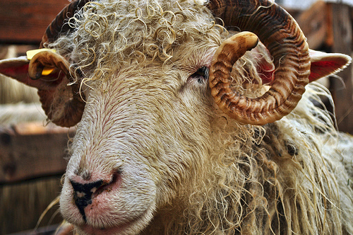
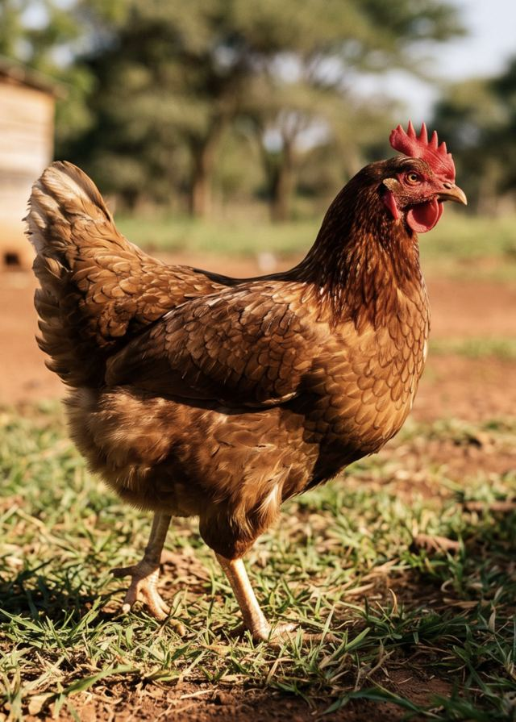
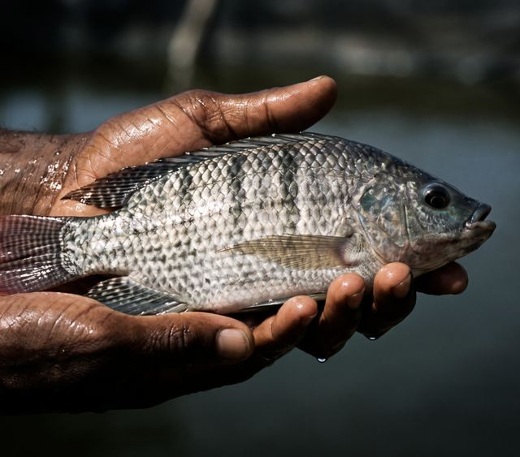
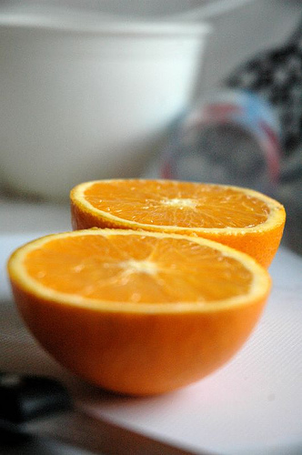
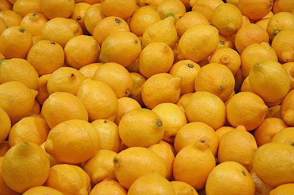
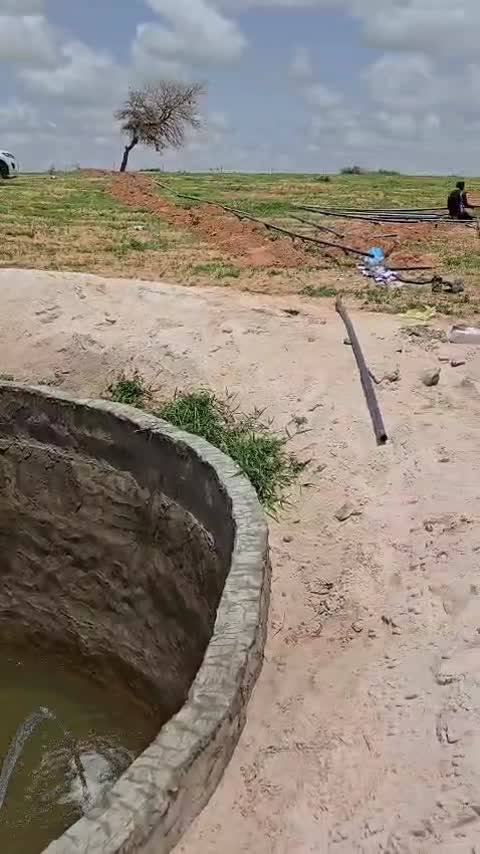
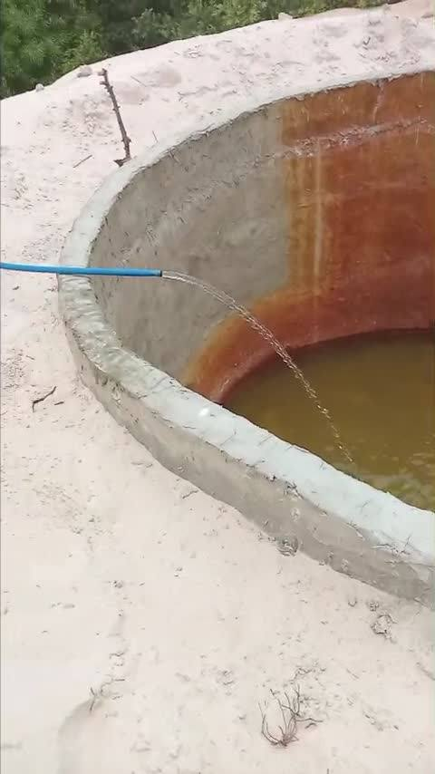
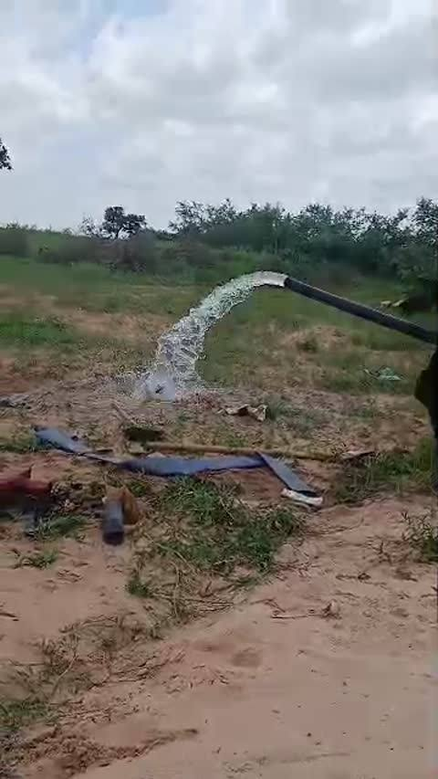
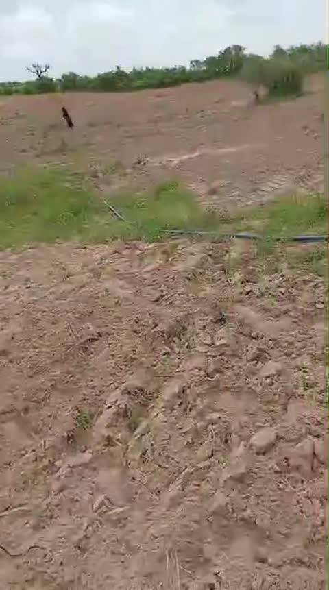

Ferme intégrée · Diogo, Niayes, Sénégal
Une ferme de 3,5 hectares où moutons, poulets, tilapia, arbres fruitiers et légumes grandissent ensemble, dans un seul cycle naturel. Vendu en direct, sans intermédiaire.
Ce que la ferme produit
Demandez les disponibilités de la semaine sur WhatsApp : on vous répond avec photos, prix du jour et options de livraison.

Photo d'illustrationRaces locales Bali-Bali et Peul-Peul, et Ladoum. Suivi vétérinaire régulier. Pour Tabaski, cérémonies ou boucherie.
Demander les prix →
Photo d'illustrationÉlevage semi-intensif, nourris aux céréales locales. À l'unité ou en lot pour restaurants et événements.
Commander →
Photo d'illustrationÉlevé dans nos bassins en béton. Frais, et bientôt fumé ou séché. Idéal pour restaurants et hôtels.
Demander la disponibilité →
Photo d'illustrationMangues greffées, oranges, pamplemousses, citrons, et légumes de saison des Niayes, en panier ou en gros.
Voir les vergers →Le secret de nos produits
Nos animaux fertilisent nos cultures, nos cultures nourrissent nos animaux. Ce cycle fermé, c'est ce qui donne le goût à nos produits.
Arbres fruitiers
Des arbres fruitiers plantés entre les parcelles de légumes, arrosés par l'eau des bassins et nourris au compost de la ferme.
| J | F | M | A | M | J | J | A | S | O | N | D |
|---|

Photos d'illustration. Elles seront remplacées par les photos de nos propres vergers.
Les plus beaux moutons partent en premier. Réservez à l'avance et évitez la course au foirail la veille de la fête.
Offrez le mouton de la fête à votre famille au Sénégal. Vous choisissez depuis New York, Paris ou ailleurs sur photos et vidéos, et nous livrons chez vos proches.
Offrir un moutonProduits frais de la ferme, paniers de saison, et moutons pour les grandes fêtes et cérémonies.
Approvisionnement régulier en poulet, tilapia, fruits et légumes, avec un seul fournisseur et des volumes fiables.
Une ferme tenue par un Sénégalais de la diaspora, pour faire plaisir à la famille restée au pays, en toute confiance.
Pas d'images de synthèse ici : ce sont nos bassins, notre forage et nos parcelles, filmés sur place à Diogo.




Nos produits finissent dans les plats que tout le monde aime :
Exemples à remplacer par de vrais avis clients, avec nom et photo.
« [Avis d'un client famille : qualité du mouton de Tabaski, sérieux de la livraison.] »
« [Avis d'un restaurateur : régularité et fraîcheur du poulet ou du tilapia.] »
« [Avis d'un client de la diaspora : mouton offert à la famille depuis l'étranger.] »
Où nous trouver
La ferme est à Diogo, département de Tivaouane, région de Thiès, entre Mboro et Lompoul, à quelques kilomètres de l'océan.
Visites guidées sur rendez-vous. Voir les animaux, les bassins et les vergers, et repartir avec des produits frais. Commandes en gros et partenariats bienvenus.